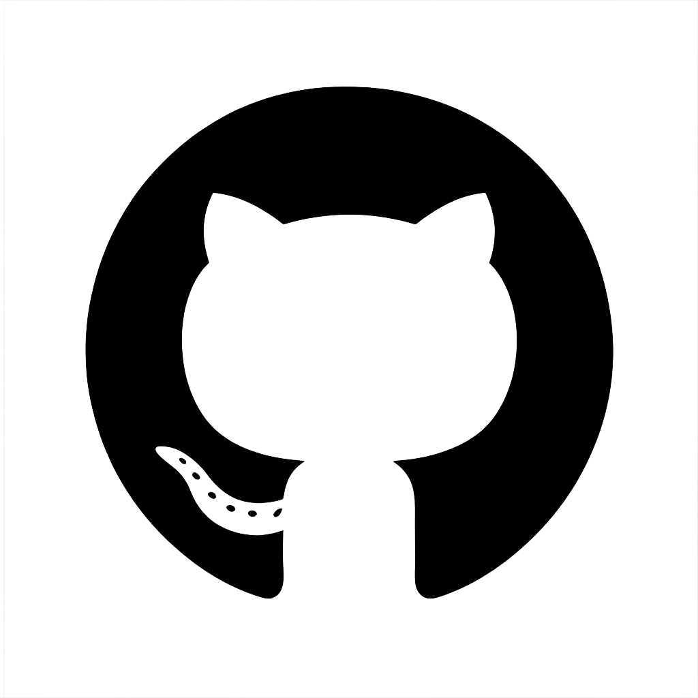

"Bazen kaybolmamız, doğru yolu bulmamız içindir." – Haruki Murakami
Selam! Ben Şevval, 18 yaşındayım. Ankara'da yaşıyorum. Ankara Üniversitesi - Bilgisayar Programcılığı 1. sınıf öğrencisiyim. Aynı zamanda TSSF'de hakemlik sınavını geçmiş ve aday hakemliği hak kazanmış bir hakemim. Alanım 2 yıllık olduğundan dolayı mezun olduktan sonra DGS'ye girip 4 yıla tamamlamak istiyorum. Anime izlemeyi, müzik dinlemeyi, oyun oynamayı, yüzmeyi, basketbol oynamayı, çizgi roman ve kitap okumayı, Etoloji hakkında araştırma yapmayı çok severim. Gümüş isimli küçük bir dostum var. En sevdiğim renk yeşil .
 GitHub profilime buraya basarak gidebilirsiniz.
| Okul | Bölüm | Yıl |
|---|---|---|
| Özcan Sabancı Mesleki ve Teknik Anadolu Lisesi | Bilişim Teknolojileri | 2020 - 2024 |
| Ankara Üniversitesi | Bilgisayar Programcılığı | 2024 - 2026 |